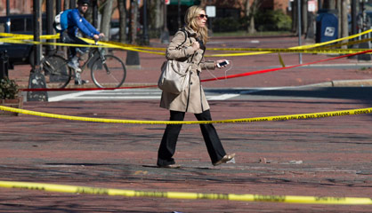

Los ciudadanos tratan de sobreponerse al terror después del atentado de este lunes en el maratón.
La tercera víctima mortal del atentado de Boston es Lu Lingzi, una estudiante china, graduada por la Universidad de Boston.
Maduro prohíbe las protestas de la oposición tras la muerte de siete personas. Detenidos 135 ciudadanos por actos violentos
Sin embargo, los magistrados del Tribunal Europeo de Derechos Humanos no admiten las denuncias por torturas y malos tratos de la ex primera ministra
Los ciudadanos tratan de sobreponerse al terror después del atentado de este lunes en el maratón